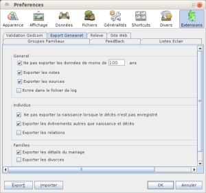
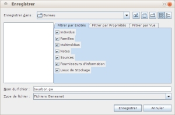
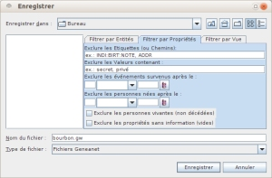
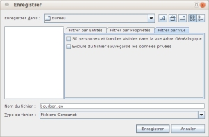
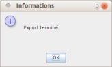

Vous trouverez Geneanet à www.geneanet.org
|  |
Cocher les cases voulues. |
|  |
Premier écran : |
|  |
Deuxième écran : Onglet Filtrer par Propriétés : cocher les cases ou remplir les zones décrivant les exclusions. |
|  |
Troisième écran : Onglet Filtrer par Vues : cocher les cases. |
|  |
Utiliser le bouton [Enregistrer] lance la création et l'enregistrement du fichier .gw . C'est un fichier texte, il se consulte avec un éditeur de texte. |
|
|
|